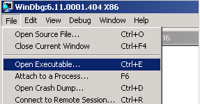

When we now do the same in windbg, this is what we see :
Close Ollydbg, open windbg and open the soritong.exe file.

The debugger first breaks (it puts a breakpoint before executing the file). Type command g� (go) and press return. This will launch the application. (Alternatively, press F5)

CONTINUE FROM HERE